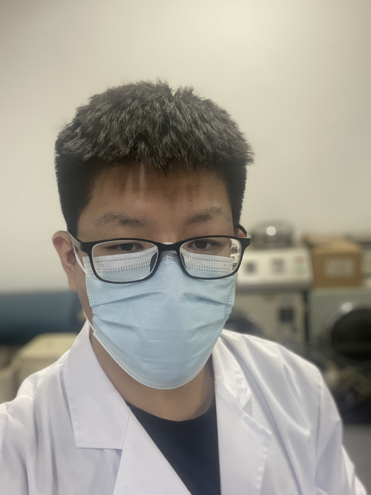

For a detailed CV, download the PDF version.
Personal Information
Name: Runchen Li
Location: Stony Brook University - 100 Nicolls Road, Stony Brook, NY 11794, USA
Bachelor of Science in Physics & Mathematics, GPA: 3.81/4 - Stony Brook University & Anhui University, Expected Degree in June 2025
Skills and Certifications
- Proficient in Labview for simulation, test measurement, and control applications.
- Experienced with Origin for data analysis, visualization, and graphing.
- Experienced with Matlab for data analysis, visualization, and graphing.
- Skilled in using Sputter and Ebeam for thin film growth and 2D crystal material stacking.
- Capable of using AFM and TEM for surface and nanoparticle analysis.
- Adept in Python for data analysis and algorithm development.
- Familiar with Keil for microcontroller programming and NanoScope Analysis for data visualization.
- Familiar with using html to edit and modify websites.
- Familiar with design and soldering of electronic circuits.
Internship Experience
Various roles focusing on two-dimensional materials, graphene, nanoparticle analysis, and aquatic algae plants simulation using Python.
See CV for details!
Relevant Experience
Director of academic style construction of the league organization at Stony Brook Institute at Anhui University, focusing on data processing and organizing learning activities.
Director of ASPS, Stony Brook University.
Technical Proficiency
Language: English (Fluent), Mandarin Chinese (Native)
Software: Overleaf(LaTeX), WPS, Labview, Origin, Matlab, Keil, NanoScope Analysis, Pycharm(Python), Adobe Photoshop, Adobe Premiere, Adobe Audition